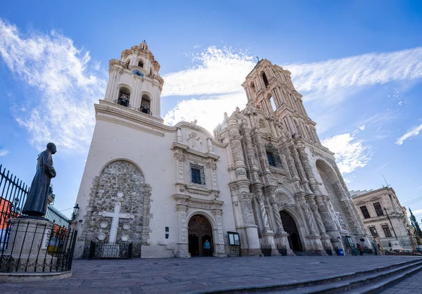

Coahuila de Zaragoza es un estado ubicado en la región norte de México, limitando al norte con Texas, Estados Unidos. Es el tercer estado más grande del país, con una superficie de 151,563 km², y su capital es Saltillo. Coahuila es un importante centro industrial y económico, destacándose en la producción de acero, automóviles, y textiles. El estado también tiene una rica historia, con raíces que se remontan a las culturas prehispánicas, la colonización española y su papel en la Revolución Mexicana.
Coahuila es conocido por sus tradiciones que reflejan su historia y cultura. Una de las celebraciones más importantes es la Feria de la Uva y del Vino en Parras de la Fuente, que se realiza cada agosto. Este evento destaca la producción vitivinícola de la región, con concursos de vino, desfiles, y muestras culturales. Otra tradición relevante es la Cabalgata de Sabinas, un evento anual en el que miles de jinetes recorren las calles de Sabinas, rememorando la importancia de los caballos en la cultura coahuilense.
La gastronomía de Coahuila es diversa, con influencias del norte de México y de la vida ranchera. Entre los platillos más representativos se encuentran el cabrito al pastor, que es un cabrito asado lentamente a las brasas. También es popular la carne asada, acompañada de frijoles charros y tortillas de harina. Otro platillo típico es el asado de puerco, preparado con carne de cerdo en salsa roja, y el pan de pulque, un pan tradicional fermentado con pulque, una bebida alcohólica ancestral.
| Dato de interés | Dato de interés | Dato de interés |
|---|---|---|
| Coahuila es uno de los principales productores de vino en México, especialmente en la región de Parras de la Fuente, que es conocida por ser el hogar de Casa Madero, la bodega de vinos más antigua de América, fundada en 1597. | El estado alberga el desierto de Cuatro Ciénegas, una reserva natural única con pozas de agua que contienen organismos ancestrales y un ecosistema muy particular, considerado uno de los pocos lugares en el mundo con estas características. | Coahuila tiene una rica tradición paleontológica, con importantes yacimientos de fósiles de dinosaurios en la región de General Cepeda. Es uno de los estados con más descubrimientos de fósiles en México, atrayendo a científicos y turistas interesados en la paleontología. |